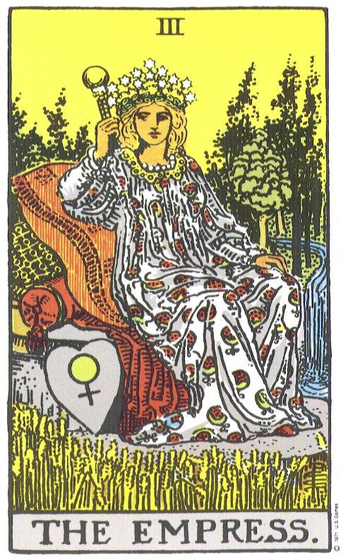
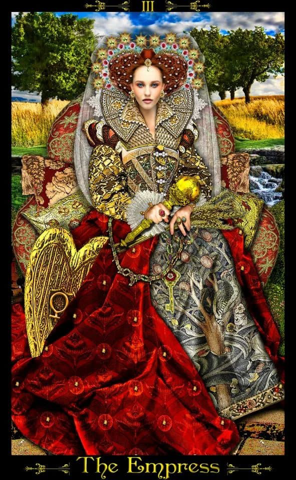
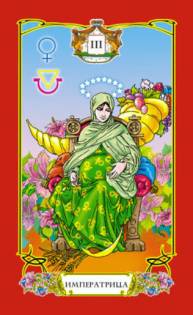
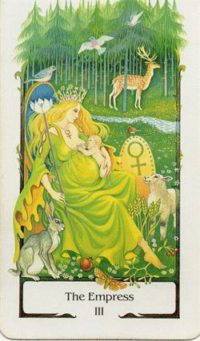
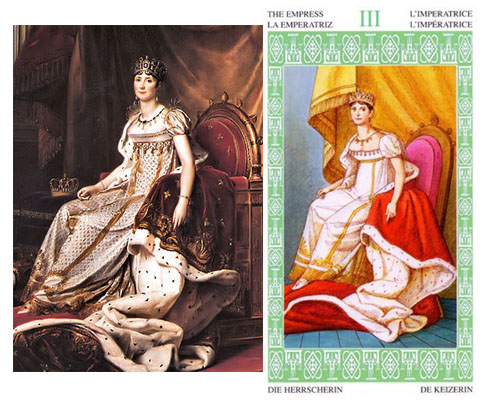
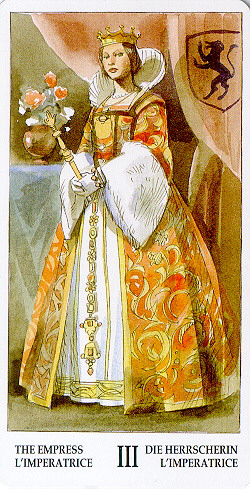
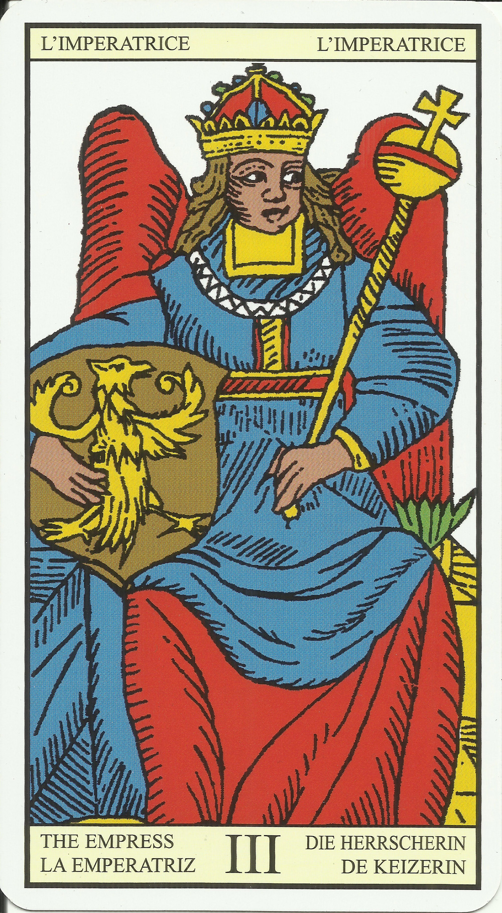
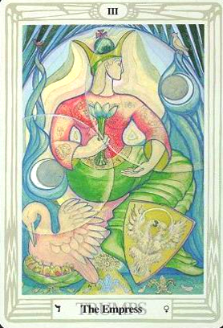
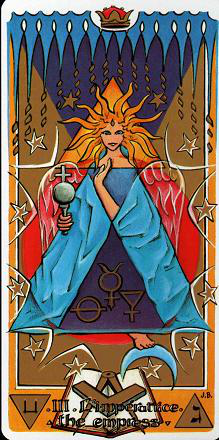
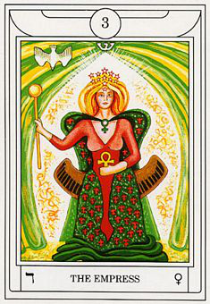
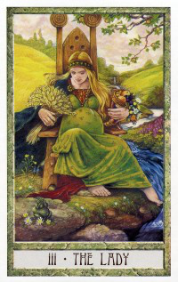
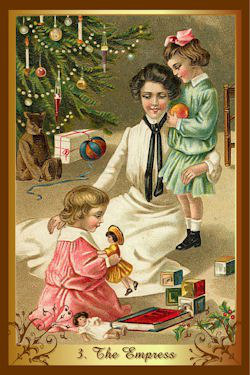
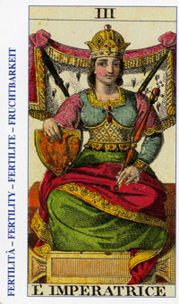
детали на карте:
Женщина - инь, Трон -символ власти, скипетр - власть над Землей, царственные одежды - статус, комфорт, богатство, корона из звезд - символ неба (например, дочь Неба), щит с символом Венеры (иньский принцип), на заднем фоне лес (жизнь, мир), ручей (водная стихия), часто встречается колосья (плодородие, урожай), цветы (красота), иногда дети (результат), либо беременность (женщина дающая жизнь).
цвет: красный (здоровье, энергия, царственность), зеленый (жизнь, рождение), желтый (теплота, плодородие - цвет колосьев), голубой - вода (на некоторых картах виднеется ручеек)
фигура:
перевернутый конус (треугольник), чаша, в кругу росток (или семя)
скипетр увенчаный фигурой Земли
символ:
символ Земли - круг с крестиком; перевернутый треугольник
буква:
Ж
ощущения
помедетировав на карту, вспоминается ощущение когда понимаешь что беременна, что скоро родится ребенок, удивительное ощущение, во-первых твое тело меняется, ты понимаешь, что стал участником великого действа(!), когда в тебе зарождается жизнь. Я - участник чего-то великого!!! Скоро твоя жизнь изменится. Еще можно сравнить, как в детстве, в канун Нового Года засыпаешь, а утром тебя под елкой ждет подарок ))
чувство радости, праздника
Зрелость, материнство, животворящая энергетика,
что-то предывало в спячке, а теперь оно растет.
Знаешь, есть таймлапсы распускающихся цветков, это про это!
запах:
запах цветов, розы, жасмина
звук:
пение птиц (свирель соловья)
вкус:
сочный плод (фрукт), сок стекает по губам, наслаждение вкусом
астрология:
Венера, почему-то хочется сюда Солнце еще добавить, ну и Луну (а вот, кстати и триада :)) )
мифология:
Женщина-Мать, Великая Мать, Гея, Деметра, Богородица, Афродита
Ключевые слова: Рост чего-либо, например личностный рост. Полная жизнь, изобилие. Жизнь - есть любовь. Жажда жизни! Наполненность. В тебе столько красоты, сколько ты можешь увидеть в других
способности: давать жизнь, оживлять
окружение: чаша со вкусной едой
амулеты: женские украшения (ожерелья как вариант)